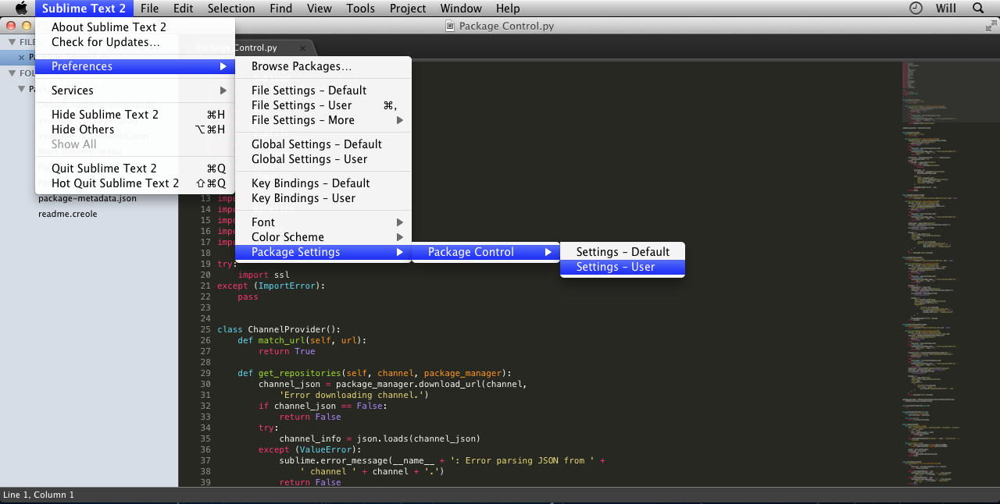
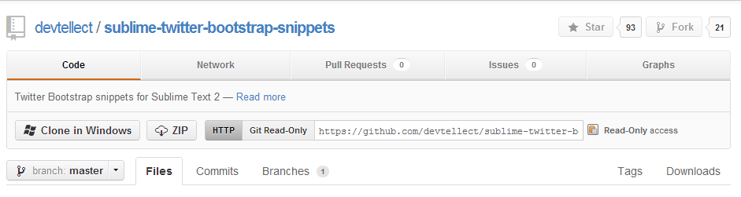
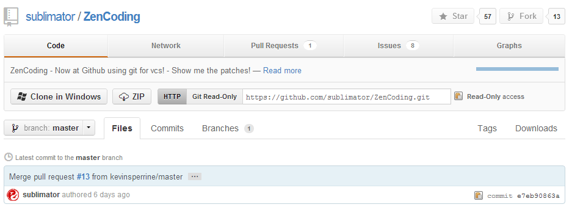
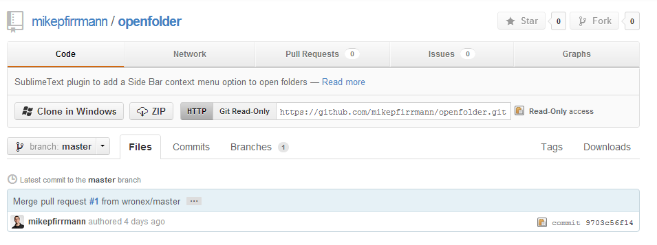

Aprendiendoando
Bootstrap Twitter

Enchulando nuestro Sublime Text2
En esta ocasion vamos a enchular nuestro sublime text2 para trabajar con Bootstrap
Instalando
Instalaremos algunos packages que nos permitiran hacernos la vida mas facil
Sublime Package Control
Un gestor de paquetes con todas las funciones que le ayuda a descubrir, instalar, actualizar y eliminar paquetes de Sublime Text 2.
Twitter Bootstrap Snippets
Codigos preestablecidos de bootstrap.
Zend Coding
Es un plugin para casi todos los editores webs disponibles que nos permitirá generar HTML/XML/XSL de una forma mucho más rápida que de cualquier otra
Open Folder
Un plugin SublimeText para añadir una opción del menú contextual para abrir carpetas de la barra lateral.
Nuestra Primera Pagina
Crearemos nuestra primera pagina con Bootstrap
Bootstrap twitter 2.1.1
Descargar nuestros archivos de la pagina oficial
Codeandoando
Vamos a codear un poquito

Gracias
aprendiendoando
Twitter
Facebook